Visualizations
Implementation details
Copulas.jl provides a dependency‑light plotting interface via Plots.jl recipes. Everything (bivariate contours/surfaces, marginal overlays, and high‑dimensional pairwise panels) is driven by keywords to the plot function.
All obj::Copula and obj::SklarDist are included in the following unified interface:
plot(obj)gives a pairwise matrix of scatterplot of the copula/sklardist, with marginal histograms and Kendall/Spearman corelations.plot(obj, what)withwhat ∈ (:pdf, :logpdf, :cdf)– adds contour on top of the scatterplots corresponding to the pdf, logpdf or cdf function respectively.plot(obj, what; seriestype=:surface)– For bivariate objects only : gives 3D surfaces of the pdf, cdf or logpdf.
The following keywords can be used:
scale=:copula / :sklar: When plotting aSklarDist, can be used to set the scale of the main scatterplots.show_marginals = true/false: Set totrueto show histograms of the marginals (in bivariate plots only). Defaults totrueforobj::SklarDistandfalseforobj::Copula.n=1500: Number of points in the scatterplots.bins=40: Number of bins in the histograms.pts_alpha=0.3the alpha for the scatterplot.overlay_n=60the grid size use for contour plots of pdf, cdf or logpdf.show_axes=true: set to false to hide the axesmarg_alpha=0.6: alpha to fil the histograms.show_corr=true: show the Kendall/Spearman bivariate values.
All standard Plots.jl options (colors, levels, colorbar, size, themes, etc.) are available. Surfaces respect colorbar=true if set; contours suppress colorbar unless explicitly requested. Quick tips:
- Increase
overlay_nfor smoother contours (cost grows ~ O(overlay_n²)). Increasenfor denser scatter. - Omit
whatto hide the contour/surface and view only the scatter. - Set
colorbar=trueto add a colorbar (contours default to none). - Upper triangle correlation text is centered; adjust globally with
annotationfontsizeif desired. - Diagonal KDE uses a simple Gaussian kernel (Silverman bandwidth) and is always shown on the marginals.
Examples
Let us load Copulas and Plots to ativate the extension:
using Copulas
using Plots # ensure recipes extension loads
using Distributions # for marginalsBivariate Copula
A bivariate Copula can be plotted as follows:
gc = GaussianCopula(2, 0.75)
p1 = plot(gc; title="Default")
p2 = plot(gc, :pdf; title=":pdf")
p3 = plot(gc, :logpdf; title=":logpdf")
p4 = plot(gc, :cdf; title=":cdf")
plot(p1,p2,p3,p4; layout=(1,4), size=(1200,260))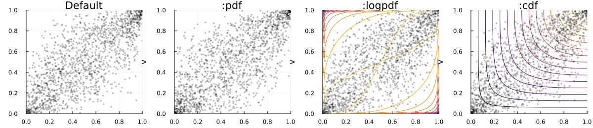
Bivariate SklarDist
For a bivaraite SklarDist, the default plot shows the scatterplot on the copula scale and add histograms of the marginals:
sd = SklarDist(GaussianCopula(2, 0.7), (Gamma(2,2), LogNormal(0.0,0.4)))
plot(sd)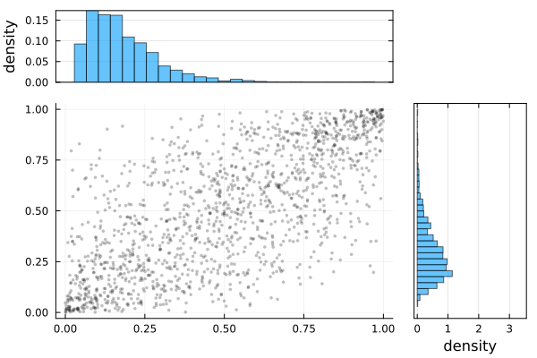
You can have the scatterplot on the marginal scales by setting scale=:sklar as well, and of course the contour by :pdf, :logpdf, :cdf still works:
# Marginal scale with marginals
plot(sd, :logpdf; scale=:sklar)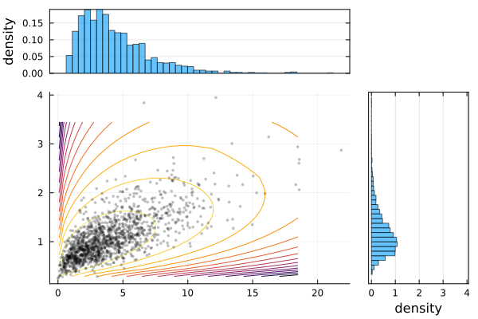
And finally you can remove the marginals by setting show_marginals=false as follows:
q1 = plot(sd; scale=:sklar, show_marginals=false, title="Default")
q2 = plot(sd, :pdf; scale=:sklar, show_marginals=false, title=":pdf")
q3 = plot(sd, :logpdf; scale=:sklar, show_marginals=false, title=":logpdf")
q4 = plot(sd, :cdf; scale=:sklar, show_marginals=false, title=":cdf")
plot(q1,q2,q3, q4; layout=(1,4), size=(1200,260))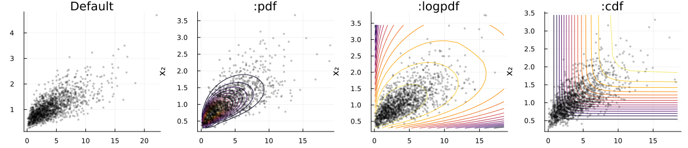
Surfaces (Copula & SklarDist)
You can obtain surface plots of bivariate copulas and sklardist as follows:
fr = FrankCopula(2, 0.8)
s1 = plot(fr, :pdf; seriestype=:surface, title=":pdf")
s2 = plot(fr, :logpdf; seriestype=:surface, title=":logpdf")
s3 = plot(fr, :cdf; seriestype=:surface, title=":cdf")
plot(s1,s2,s3; layout=(1,3), size=(900,280))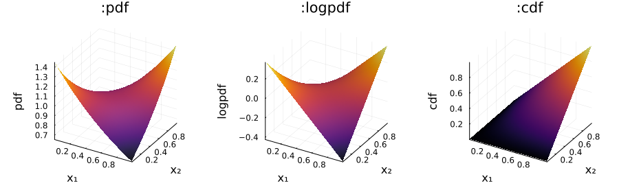
By default, the SklarDist's surfaces are on marginal scale:
sds = SklarDist(FrankCopula(2, 0.8), (Gamma(2,2), LogNormal(0.0,0.5)))
ss1 = plot(sds, :pdf; seriestype=:surface, title=":pdf")
ss2 = plot(sds, :logpdf; seriestype=:surface, title=":logpdf")
ss3 = plot(sds, :cdf; seriestype=:surface, title=":cdf")
plot(ss1,ss2,ss3; layout=(1,3), size=(900,280))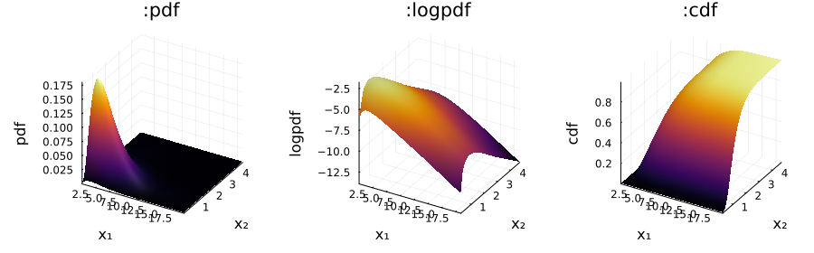
You can obtain them on copula scale by setting scale=:copula.
Pairwise Matrix – Copula
When giving a higher dimension object to the plotting function, by default you get a pairwise matrix:
c5 = FrankCopula(5, 5.0)
plot(c5)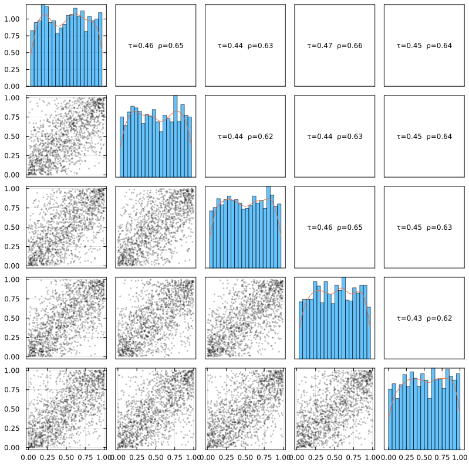
You can control of course contours by :pdf, :logpdf, :cdf, remove the correlations with show_corr=false, and a few other options (see the top of this file for their definitions)
c5 = FrankCopula(5, 12.0)
plot(c5, :pdf; show_corr=false, n=1200, overlay_points=70, overlay_alpha=0.30, bins=30)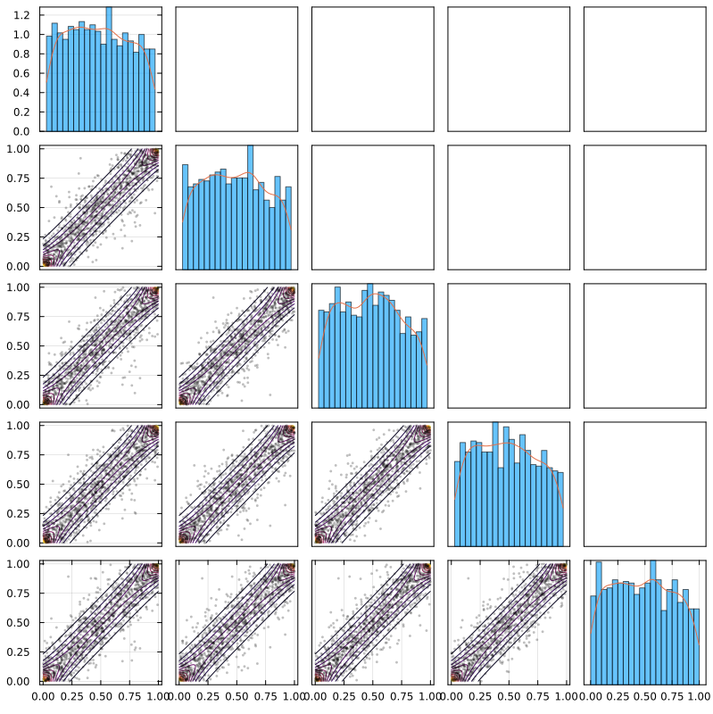
Pairwise Matrix – SklarDist
By default for a SklarDist, the scatterplots are on copula scale:
SD5 = SklarDist(ClaytonCopula(5, 6.0), (Gamma(1,2), Normal(0,2), Beta(2,6), Beta(6,2), Uniform()))
plot(SD5, :pdf; n=800, overlay_points=60, overlay_alpha=0.30, bins=28)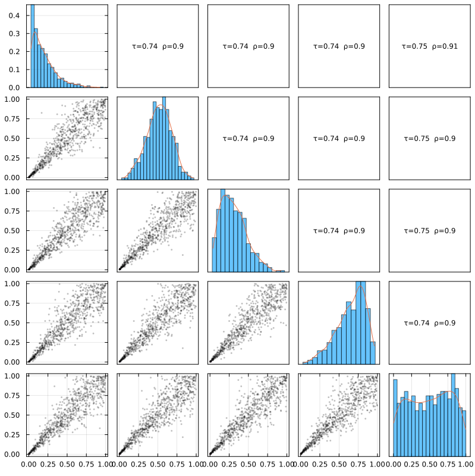
You can change the number of points and the numebr of bins of the histograms to adapt to your case:
plot(SD5; n=400, bins=12, pairs_show_corr=true)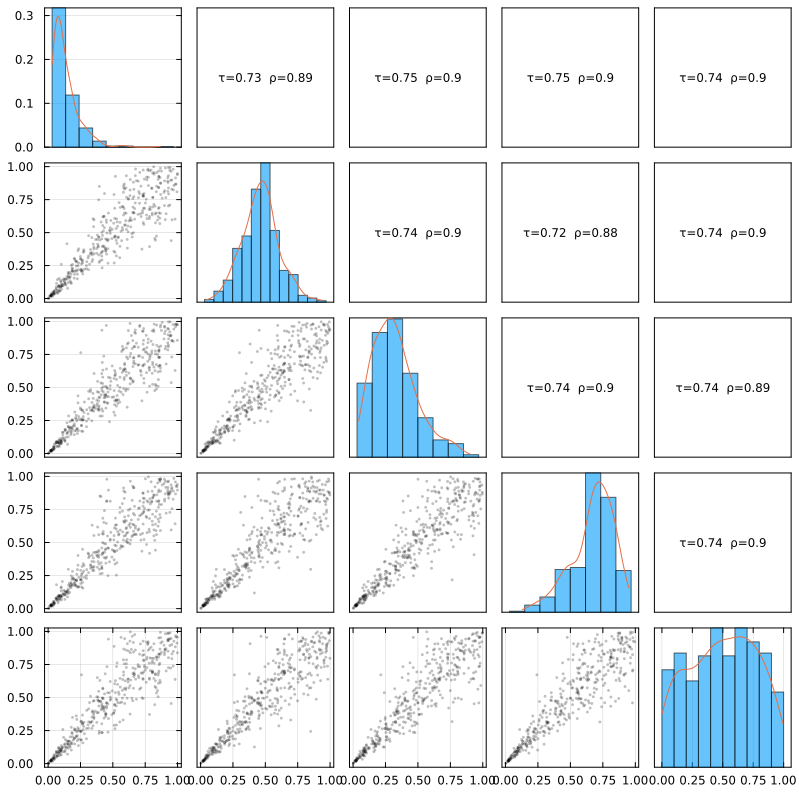
And you can also have the scatterplots on the :sklar scale
plot(SD5, :pdf; scale=:sklar, n=800, bins=28)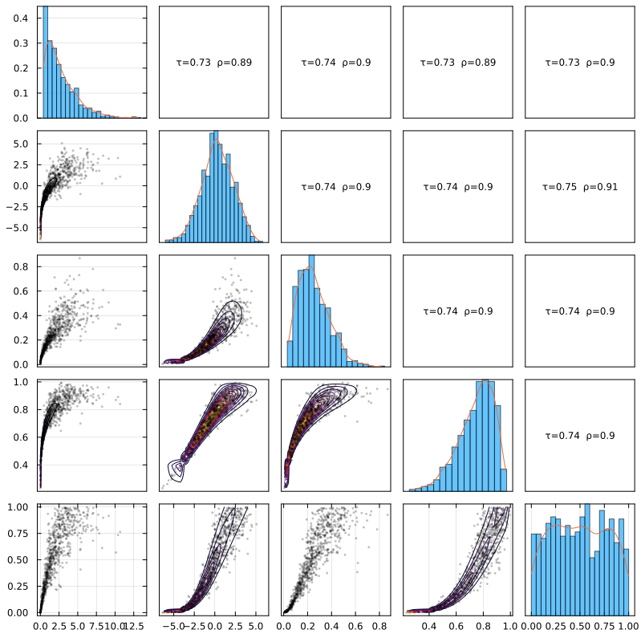